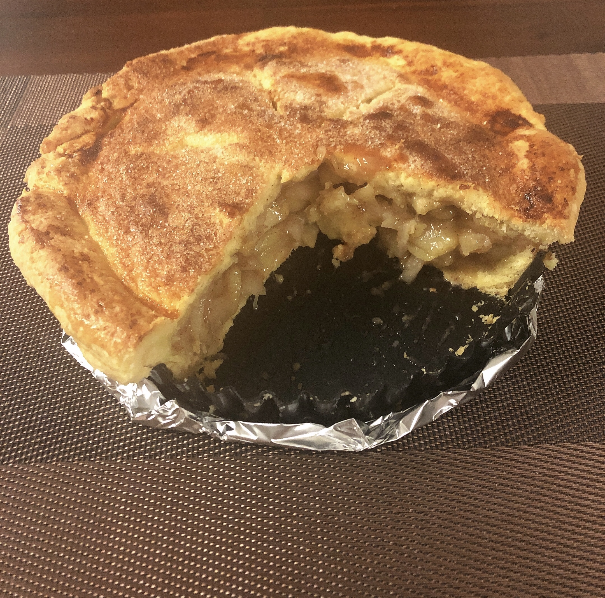

Apple Pie

This is my famous apple pie recipe.
Ingredients
Crust
- all-purpose flour
- butter
- salt
- vodka, freezer temperature
- ice water
Filling
- 6 cooking apples, peeled and cut into 2 cm pieces
- 1 cup brown sugar
- 1/4th cup honey
- 2 tbsp butter
- 1 tsp cinnamon
- 1/8th tsp nutmeg
- 1/8th tsp salt
- 1 tbsp cornstarch, plus enough water to make slurry
Instructions
Crust
- In a large bowl, using a pastry blender, combine the butter and flour
- Mix the chilled vodka and ice water
- Slowly add vodka and water mixture little by little, until the dough sticks just sticks together
- Shape the dough into a ball separate into two equal parts
- Flatten the dough balls into disks, and wrap in clingwrap; refridgerate
Filling
- Over medium heat, cook the apples, butter, and sugar until just softened
- Add honey, spices, and salt and continue to cook
- Combine cornstarch with just enough water to make a slurry
- Add slurry to the applie filling mixture, and cook until thickened
- Remove from heat
Assemble the Pie
- Roll out the two pie crust discs into 1 cm thick sheets
- Place one sheet in pie pan and shape
- Place pie weights on top of crust
- Bake crust for 20 minutes
- Remove crust from oven, and remove pie weights
- Spoon filling onto crust and place second pie crust sheet over
- Trim extra dough from edges and crimp
- Cut several vents in top pie crust
- Bake for an additional 20 minutes